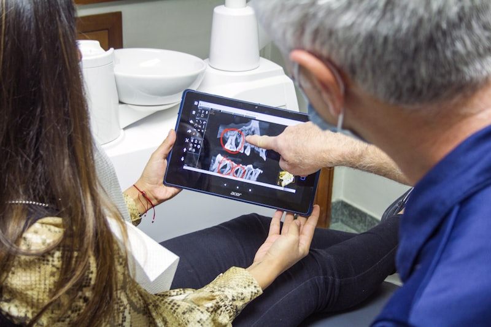
CAD/CAM Sistemleri
CAD/CAM (Computer Aided Design / Computer Aided Manufacturing) sistemi, dijital diş tasarımı ve üretimini aynı seansta gerçekleştiren ileri teknoloji bir yöntemdir. Geleneksel protez yöntemlerine kıyasla çok daha hızlı ve hassas sonuçlar elde edilir.
- Tek seansta porselen kuron ve inley uygulaması
- Yüksek hassasiyetli dijital ölçü alma — geleneksel ölçü maddesi yok
- Doğal dişle uyumlu renk ve şekil tasarımı
- Metal içermeyen, biyouyumlu seramik materyaller
- Uzun ömürlü ve estetik sonuçlar
Dolgular
Diş çürüklerinin temizlenerek dişin işlevini ve estetiğini yeniden kazandırdığı dolgu tedavileri, modern kompozit ve porselen materyallerle uygulanmaktadır. Dişin rengine özel uyum sağlayan estetik dolgular, gülüşünüzün bütünlüğünü korur.
- Diş rengine uyumlu kompozit (beyaz) dolgular
- Porselen inley/onley restorasyon seçenekleri
- Minimal diş dokusu kaybıyla uygulama
- Ağrısız tedavi — gelişmiş anestezi yöntemleri
- Uzun ömürlü ve yüksek estetik sonuç
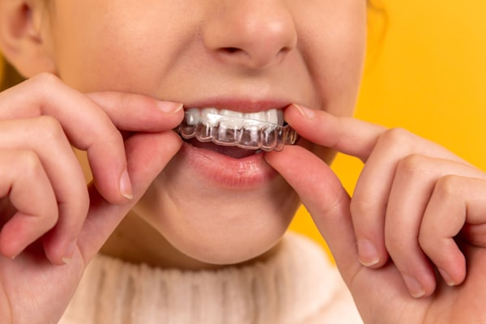
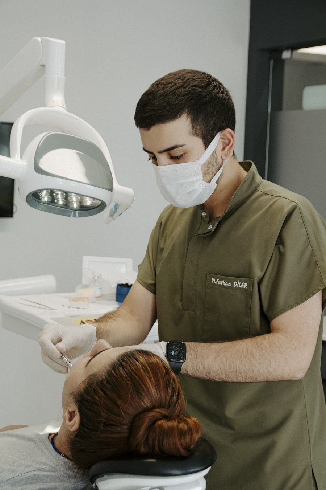
Kanal Tedavileri
Dişin iç kısmındaki enfeksiyonu temizleyerek dişi kurtarma işlemi olan kanal tedavisi, gelişmiş rotary sistemler ve apex locator cihazları ile ağrısız ve güvenli şekilde uygulanmaktadır. Çekilmesi gereken dişler bu sayede uzun yıllar korunabilmektedir.
- Rotary endodontik sistemlerle minimum ağrı
- Apex locator ile kanal uzunluğu hassas tespiti
- Tek veya çok seanslı kanal tedavisi seçenekleri
- Tedavi sonrası porselen veya zirkonyum kaplama
- Yüksek başarı oranı ile diş koruma
Cerrahi Tedaviler
Gömülü diş çekimi, kist operasyonu, apikal rezeksiyon ve frenulum operasyonu gibi cerrahi işlemler steril ortamda ve uzman ellerde gerçekleştirilmektedir. Modern alet ekipmanları ile cerrahi süreç en az rahatsızlıkla tamamlanır.
- Gömülü 20 yaş dişi çekimi
- Kist ve tümör operasyonları
- Apikal rezeksiyon (kök ucu rezeksiyonu)
- Frenektomi (dudak / dil bağı ameliyatı)
- İmplant öncesi kemik greftleme
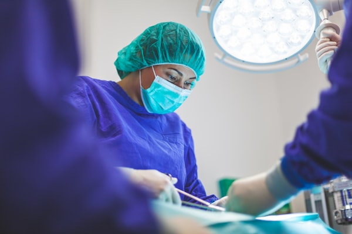
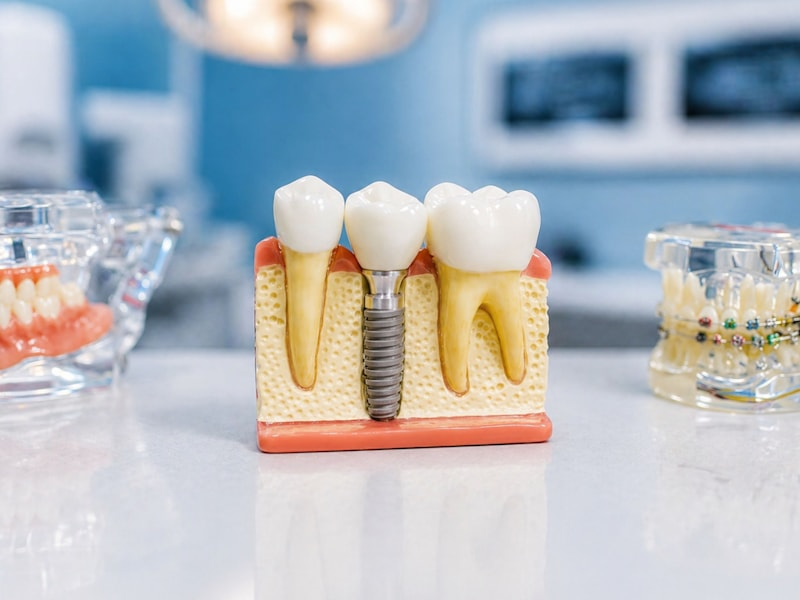
İmplant
Çene kemiğine yerleştirilen titanyum vidalar üzerine yapılan yapay dişler, kaybedilen dişin işlevini ve estetiğini en doğal şekilde geri kazandırır. Doğru bakım yapıldığında ömür boyu kullanılabilen implantlar, komşu dişleri etkilemez.
- Titanyum vida ile çene kemiğine entegrasyon
- Tek diş, köprü veya tam protez alternatifleri
- Doğal diş görünümü ve çiğneme kuvveti
- Komşu dişlere zarar vermez
- Uygun adaylarda yüksek başarı oranı (%95+)
Protezler
Eksik dişlerin tamamlanması için uygulanan sabit ve hareketli protez çözümleri, kişinin yüz estetiğini ve çiğneme fonksiyonunu yeniden sağlar. Porselen ve zirkonyum materyallerle hazırlanan sabit protezler son derece doğal görünümlüdür.
- Sabit porselen ve zirkonyum köprü protezler
- Hareketli kısmi ve tam protezler
- İmplant üstü sabit protez uygulamaları
- Hassas bağlantılı (teleskopik) protezler
- Dijital ölçü ile hassas uyum ve estetik
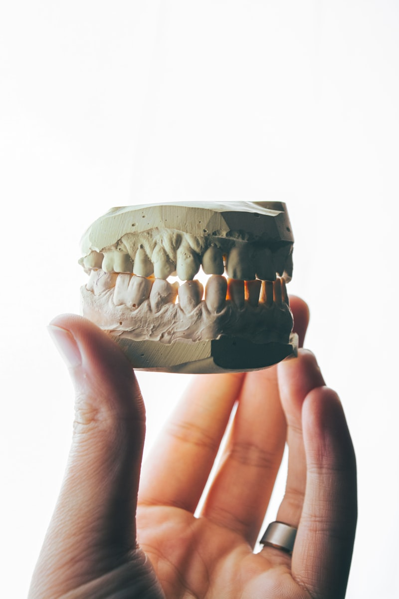

Periodontoloji
Diş eti ve diş çevresindeki dokuları etkileyen hastalıkların teşhis ve tedavisiyle ilgilenen periodontoloji, diş kayıplarının en önemli nedenlerinden olan diş eti iltihabına karşı koruyucu ve tedavi edici çözümler sunar.
- Diştaşı temizliği (scaling) ve kök düzleştirme
- Gingivektomi ve dişeti şekillendirme
- Cerrahi periodontal tedavi
- Dişeti çekilmesi tedavisi
- Periyodik kontrol ve bakım programı
Çocuk Dişleri
Çocuklara özgü diş tedavileri ve koruyucu uygulamalar, sağlıklı ağız alışkanlıklarının küçük yaştan kazanılmasını sağlar. Minik hastalarımıza güven veren, eğlenceli ve korkusuz bir deneyim yaşatmak en büyük önceliğimizdir.
- Süt dişi dolgusu ve kanal tedavisi
- Fissür örtücü ile çürük önleme
- Flor uygulaması
- Ortodontik takip ve yönlendirme
- Çocuklara özel korkusuz tedavi yaklaşımı
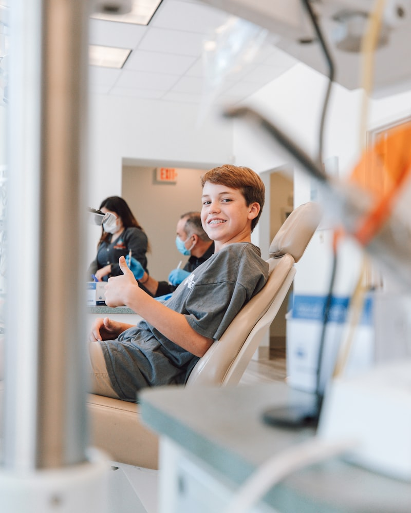
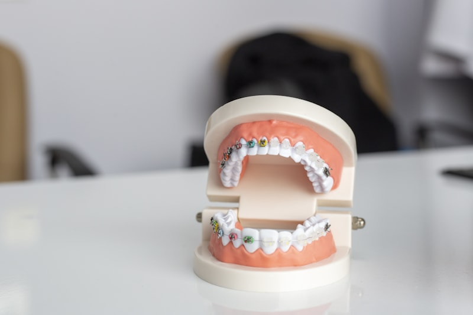
Ortodonti
Dişlerin ve çenelerin düzenlenmesi için uygulanan ortodontik tedaviler, hem estetik hem de fonksiyonel açıdan büyük fayda sağlar. Görünmez şeffaf plaklar veya geleneksel braket sistemleriyle her yaşta tedavi mümkündür.
- Şeffaf plak (aligner) tedavileri
- Metal ve seramik braket uygulamaları
- Lingual (dil tarafı) braket sistemleri
- Çocuk ve ergen ortodontik tedavileri
- Tedavi sonrası pekiştirme plakları
Çene Eklemi Tedavisi
Temporomandibüler eklem (TME) bozuklukları; çene ağrısı, baş ağrısı, kulak çınlaması ve çenede ses gelmesi gibi belirtilere yol açabilir. Kapsamlı muayene ve bireysel tedavi planıyla bu sorunlar büyük ölçüde giderilebilir.
- TME tanı ve değerlendirme
- Gece plağı (okluzal splint) uygulaması
- Oklüzyon düzenleme tedavisi
- Fizik tedavi yönlendirmesi
- Botoks ile çene kası rahatlatma
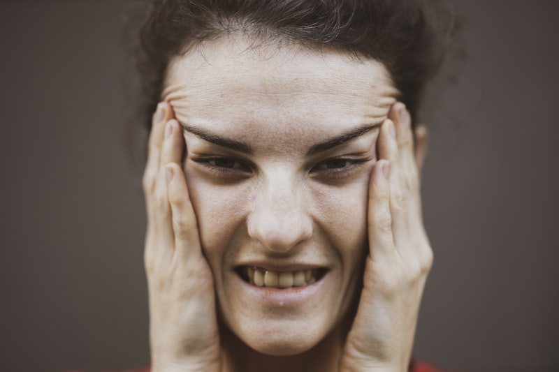
Radyolojik Görüntüleme
Doğru tanı, başarılı tedavinin temelidir. Kliniğimizde dijital röntgen ve panoramik (full ağız) görüntüleme sistemleri kullanılarak düşük radyasyon dozu ile yüksek çözünürlüklü görüntüler elde edilmektedir.
- Dijital periapikal röntgen
- Panoramik (OPG) görüntüleme
- Düşük radyasyon dozlu sistemler
- Hızlı sonuç — tedavi planlamasında anlık destek
- İmplant planlaması için detaylı görüntü analizi
Koruyucu Dişhekimliği
Hastalıkların oluşmadan önlenmesi, tedaviden çok daha az maliyetli ve konforludur. Koruyucu dişhekimliği uygulamaları; diş çürüklerini, diş eti hastalıklarını ve diş kayıplarını engellemeye yönelik sistematik bir yaklaşım sunar.
- Flor uygulaması ile diş sertleştirme
- Fissür örtücü ile çürük riskinin azaltılması
- Profesyonel diş temizliği ve polisaj
- Evde kullanım için özel bakım rehberi
- Düzenli kontrol ve erken teşhis programı
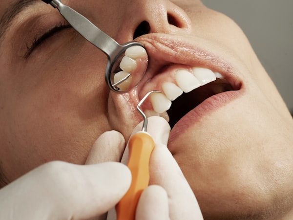
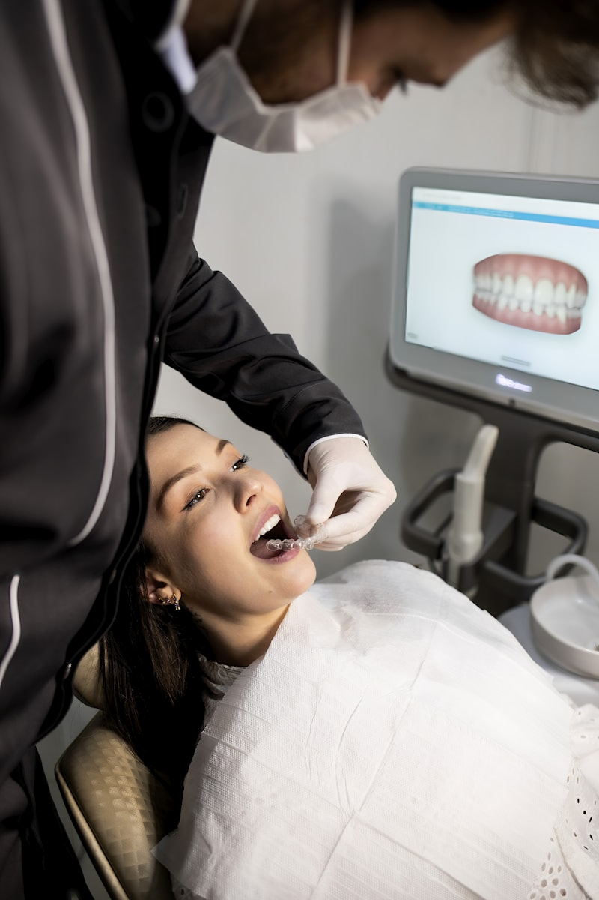
Dişhekimliğinde Lazer Kullanımı
Lazer teknolojisi diş hekimliğinde giderek yaygınlaşan, minimal invaziv ve yüksek konforlu bir tedavi yöntemidir. Yumuşak doku işlemlerinde keskin geçişler, daha az kanama ve hızlı iyileşme sağlar.
- Diş eti şekillendirme ve gummy smile tedavisi
- Aft ve oral yara tedavisi
- Diş beyazlatma destekli lazer aktivasyonu
- Minimal kanama ve hızlı iyileşme süreci
- Çoğu işlemde dikiş gerektirmez